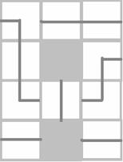

|
C |
Solve
the Broken Maze Input: Standard Input Output: Standard Output |
There is a maze having 4 rows. Each of the 4 rows contains N square blocks. There are two types of blocks used in this maze -
1. Type A
2. Type B
Type A: These types of block have a path connecting two opposite sides of the block. There are 2 possible ways to connect two adjacent sides of a block. So you can classify Type A into 2 subclasses.
|
|
|
Fig: Type A
Type B: These types of block have a path connecting two adjacent sides of the block. There are 4 possible ways to connect two opposite sides of a block. So you can classify Type B into 4 subclasses.
Fig: Type B
So there are 4*N blocks in the maze. There is a player. By entering into the left side, if the player can exit from the right side of the maze using the paths of blocks, he will solve the maze. Unfortunately some of the blocks are broken. The player cannot enter a broken block.
The player is very confused. He wants to know whether there is a way to solve this maze. He wants your help. He doesn’t want to start solving the maze if the probability of having solution is zero. He e-mailed you the maze description, and wants your suggestion whether he should start solving or not.
The player describes the maze by an integer N and 4 lines of N characters. He uses three characters A, B, X. Here A represents block of type A, B represents block of type B and X represents a broken block. The jth character of ith line of these 4 lines represents the jth block of ith row.
By getting the mail you decided that it is not possible to say whether there exists a solution or not, without knowing the subclasses. So you decided to calculate the probability. If the probability is positive you will reply the mail asking him to try otherwise you will reply asking him not to try.
The first line of input is an integer T (T<=25) that indicates the number of e-mails from the player. Each mail consists of 5 lines. First line is N ( 1<=N<=20,000 ). Each of the next 4 lines consists of N characters. Only possible characters are A, B and X.
For each case output one line which describes your reply, “Try.”, or “Don’t Try.” (Quotes for clarity).
|
1 3 BAA AXB BAB AXA |
Try. |
Explanation of
Sample Input:
Two images are given below, which are two possible mazes according to player’s e-mail, as given in sample input. You have to reply with Try. Because there is a positive probability that maze is solvable.
|
There is a path
to solve the maze. |
 This path does not solve the maze. |
Fig: Possible mazes for sample inputs.
Problemsetter:
Special Thanks: Derek Kisman